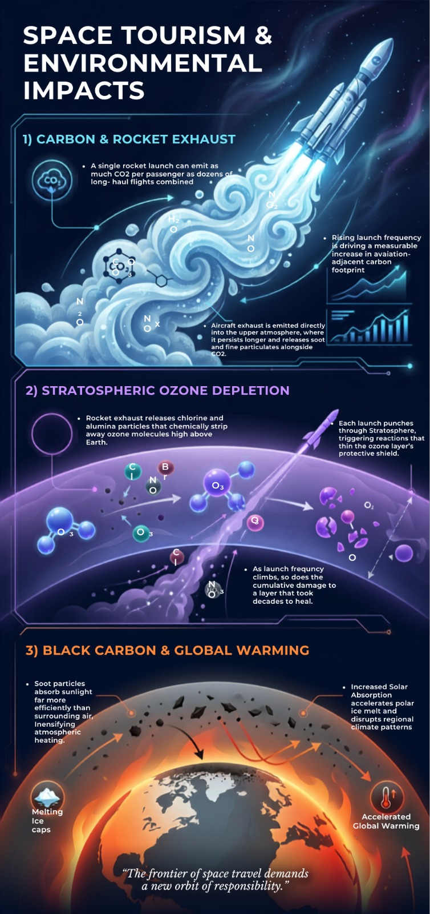

Launch activity
102 → 258
Rapid growth in global launches
A 2025 atmospheric study notes 102 launches worldwide in 2019 and 258 orbital launches in 2024, illustrating how quickly the launch environment is changing.

Commercial suborbital tourism is still small. Its emissions are not insignificant, especially once rockets carry them directly into the upper atmosphere.
Enter the story ↓Space tourism turns the atmosphere into part of the journey. That changes the environmental equation.
This website focuses on suborbital tourism, the form currently available to paying customers. Unlike most transport emissions, rocket exhaust is released vertically through the upper atmosphere and stratosphere, where pollutants can persist longer and interact with atmospheric chemistry in ways that pollution near the ground does not.
The argument follows three connected pressures: carbon and rocket exhaust emissions, stratospheric ozone depletion, and black carbon's contribution to global warming. The question is not simply how many launches occur today, but what happens if a small luxury industry scales into a frequent commercial activity.
NASA Earth Observatory. (2003, April 2). Viewing Earth's limb [Photograph]. NASA.
Recent peer-reviewed studies place space-tourism emissions inside a much larger story: launch activity is rising, suborbital travel has extremely high emission intensity, and the ozone layer is still in recovery.
A 2025 atmospheric study notes 102 launches worldwide in 2019 and 258 orbital launches in 2024, illustrating how quickly the launch environment is changing.
A 2025 PLOS ONE model estimates suborbital tourism at hundreds of times the CO₂ emissions per passenger-hour of commercial aviation.
WMO assessments project return to 1980 ozone levels around 2040 globally, around 2045 in the Arctic and around 2066 over Antarctica if current policies remain in place.
Research basis: peer-reviewed work in PLOS ONE, npj Climate and Atmospheric Science, and the WMO/UNEP ozone assessment. Full references are listed on the Summary page.

A 2025 modelling study estimates suborbital tourism at roughly 400–1,000 times the CO₂ emissions per passenger-hour of commercial aviation.
Suborbital vehicles carry only a handful of passengers, yet each trip combines launch energy, propellant production and rocket combustion into an unusually carbon-intensive journey.
Space tourism is only one part of a rapidly growing launch economy. More frequent launches mean repeated injection of gases and particles into atmospheric layers that recover slowly.
Modern rocket propellants can produce chlorine-containing species, black carbon and other pollutants that influence ozone chemistry after they reach the stratosphere.
Black carbon becomes especially concerning when rockets place it high in the atmosphere, where it absorbs sunlight and can remain far longer than soot close to the surface.

Explore the hidden production footprint, combustion emissions and high-altitude exhaust behind a short commercial flight.
Open chapter →
See why the location and lifetime of rocket pollution matter to stratospheric ozone recovery.
Open chapter →
Follow how rocket soot can persist in the stratosphere, absorb sunlight and create a warming effect much larger than its mass suggests.
Open chapter →The original infographic compresses the three environmental impacts into one visual overview. Each section links directly to the deeper chapter behind it.
